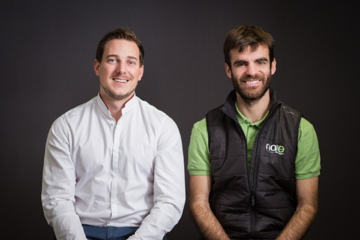
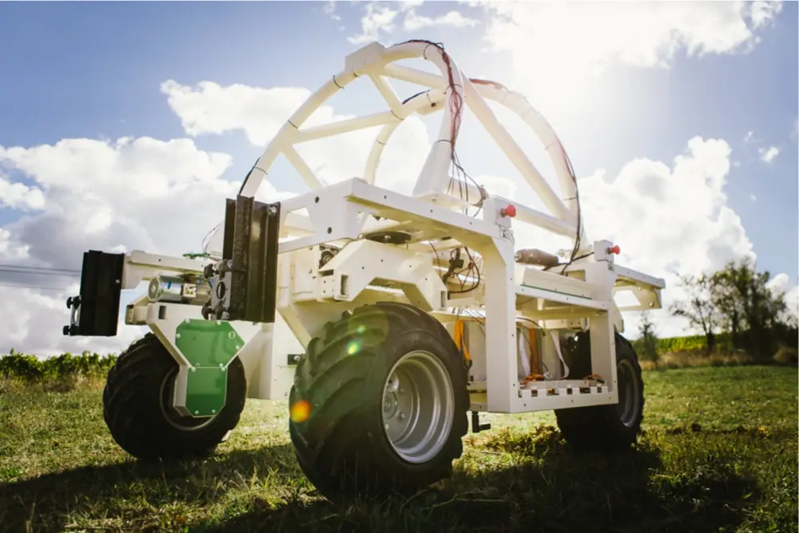
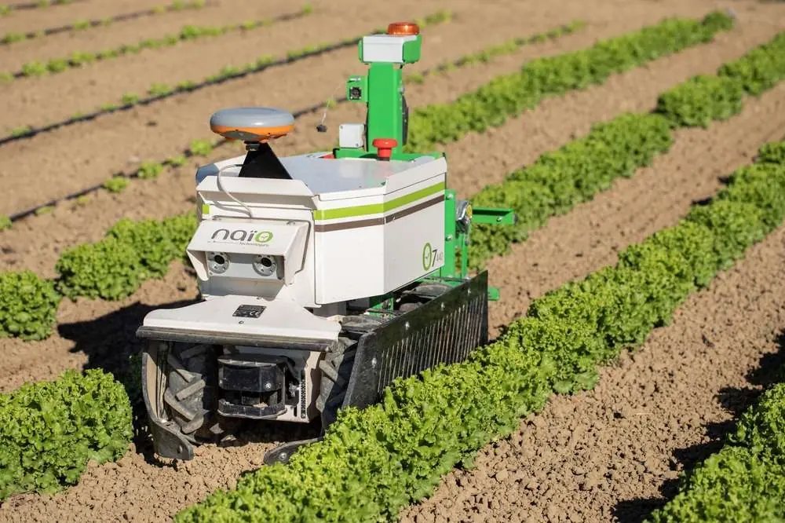
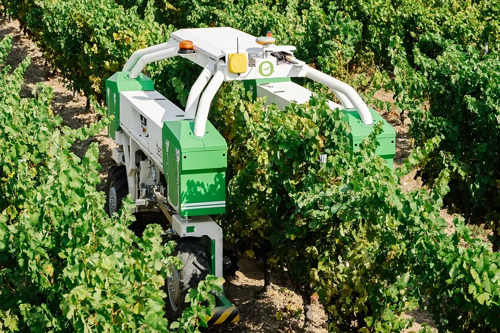
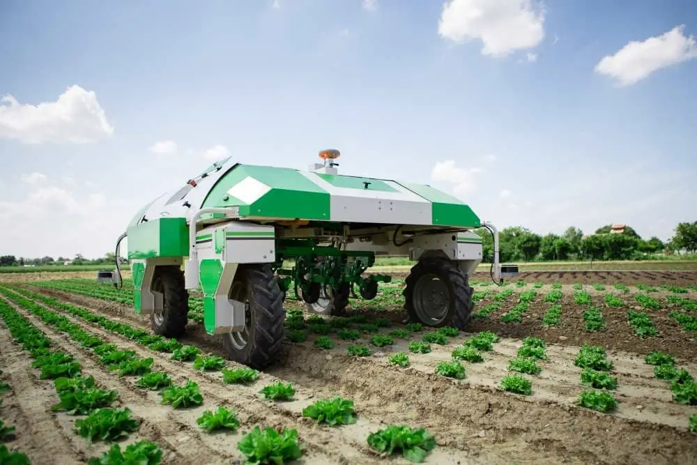

Présentation de la start-up

L’organisation est une Société de personnes (associés) fondée par deux ingénieurs français,
Aymeric Barthès et Gaëtan Séverac. L’idée originale dérière l’entreprise était de simplifier
des tâches répétitives et pénible en créant des robots capables de reproduire des tâches fatiguantes.
De cette idée est créée la stat-up en 2011 et innove encore aujourd’hui avec comme objectifs
de réduire les dégâts fait à l’environnement et réduire les travaux répétitifs des cultivateurs
Aujourd'hui ils comptabilisent 4 différents types de robots. Leur slogan « Autonomous robots
for easier farming », signifiant en français « Robots autonomes pour de l’agriculture plus simple »
représente bien leurs objectfis. Le siège sociale de l’organisation est situé à Escalquens en
Haute-Garonne. L’entreprise vielle de 10 ans est une petite moyenne entreprise ( 51 - 200 employés ).
Comme toutes les autres entreprises, Naïo Technologies a certaines dépenses obligatories, à savoir, les dépenses fixes que sont les impôts et les taxes, les loyer et l'entretien des locaux, et enfin les frais bancaires. Ensuite, il y a dépenses variables, qui sont les salaires des salariés, l’achat de matières premières et la fabrication des robots agricoles. L'entreprise participe aussi à des conventions.
Leurs principales sources de recettes et la vente de robots et l'investissements des actionnaires.
Le modèle adopté est l'innovation permanente, c’est-à-dire, qu'ils conçoivent leurs robots, d'abord en prototypes, les améliores, et finalements les mettent en ventes aux particuliés. Ils développement de nouveux robots entre-temps ou de nouvelles versions de ceux déjà existants.
Comme toutes les autres entreprises, Naïo Technologies a certaines dépenses obligatories, à savoir, les dépenses fixes que sont les impôts et les taxes, les loyer et l'entretien des locaux, et enfin les frais bancaires. Ensuite, il y a dépenses variables, qui sont les salaires des salariés, l’achat de matières premières et la fabrication des robots agricoles. L'entreprise participe aussi à des conventions.
Leurs principales sources de recettes et la vente de robots et l'investissements des actionnaires.
Le modèle adopté est l'innovation permanente, c’est-à-dire, qu'ils conçoivent leurs robots, d'abord en prototypes, les améliores, et finalements les mettent en ventes aux particuliés. Ils développement de nouveux robots entre-temps ou de nouvelles versions de ceux déjà existants.
Étude du modèle économique
Produit Proposé
L'entreprise Naïo Technologies développe et commercialise des tracteurs intelligents,
autonomes et électriques.
Cette start-up propose 4 différents, proposant des services destincts.
Cette start-up propose 4 différents, proposant des services destincts.
Bob n’est pas présent sur leur site donc j’en déduis qu’il n’est plus commercialisé.

Oz est un assistant agricole pour les tâches chronophages et pénible, il peut désherber,
tracés des sillons, semer ou planter, assister et transporter. Il est de petite taille et le
premier robot à avoir été développé, Il est commercialisé en 2014 avec l’aide de la
plateformes de financement participatifs Wiseed.

Ted est un robot de désherbage pour les cultures viticoles sans utiliser d’herbicide.
Il a une autonomie de 8 heures et une interface intuitive et un porte outil universel
permettant d’y connecter n’importe quel outil.

Dino est un automate de désherbage sophistiqué utilisant la technologie GPS pour ce
localiser dans les passerelles, il est aussi équipé de caméras pour repéré les rangées
de plantes et adapter la position des ses outils. Sont poids bien inférieur à celui d’un
tracteur traditionnel lui permet d’aller travailler plus raidement après un épisode de pluie.
Il a une autonomie de 10h et se déplace au maximum à 4km/h.
